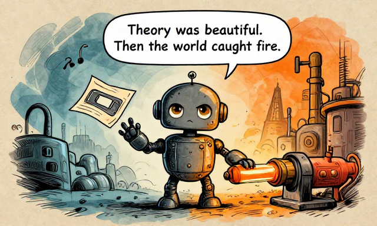
Theory was beautiful. Then the world caught fire.Last time, we watched a young mathematician imagine the simplest possible computing machine. Tape. Head. Rules. Beautiful. Elegant. Completely imaginary. Nobody had built one. Nobody needed to.
And then the world caught fire.
In 1936, Alan Turing's machine existed only on paper — a thought experiment. It was not designed to be built. But between 1939 and 1945, the Second World War created problems that no human mind could solve fast enough. Encrypted messages. Artillery tables. The atomic bomb. Theory had a deadline.
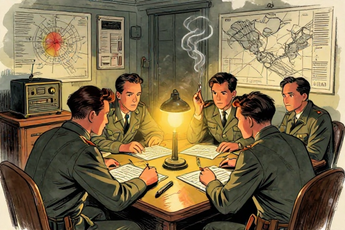
Across three countries, engineers and mathematicians raced to build machines that could think faster than people. They did not always know about each other's work. Different technologies, different designs — but they all converged on the same principle Turing had described: a machine that manipulates symbols according to rules.
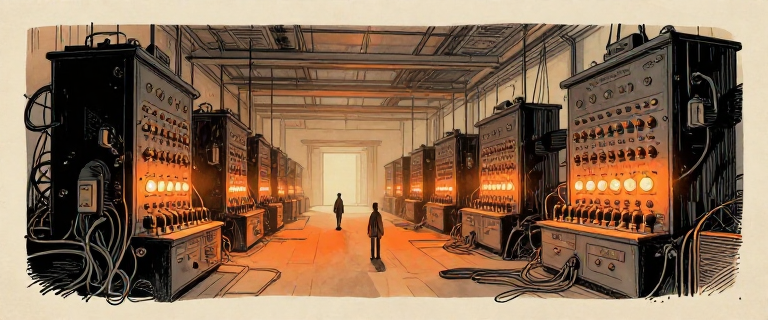
The machines they built were enormous, fragile, expensive, and revolutionary. They filled entire rooms. They consumed enough electricity to power small neighborhoods. They broke down constantly. And they changed everything.
From theory to silicon: the arc of Issue 2
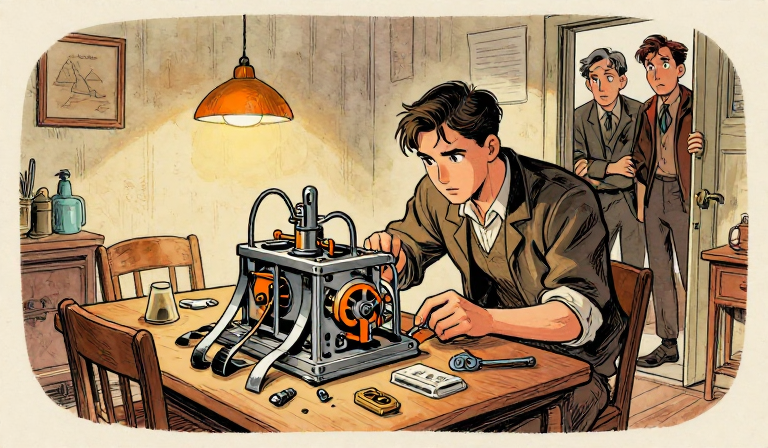
The first working programmable computer? Built by a German civil engineer named Konrad Zuse, in his parents' living room, using scrap metal and old movie film. He studied civil engineering, not mathematics. He had no idea Turing's paper existed. He just hated doing calculations by hand.
Starting in 1936 — the same year Turing wrote his paper — Zuse began building computing machines in his parents' apartment. His first attempt, the Z1, was purely mechanical, built from hand-cut metal plates. It jammed constantly. But the concept was sound.
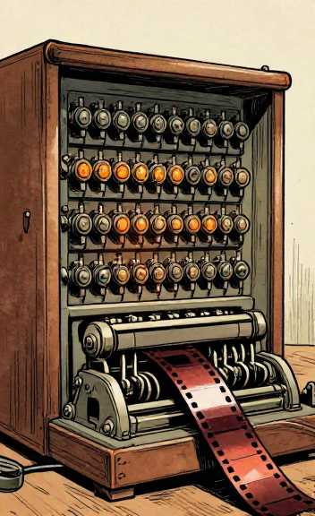
On May 12, 1941, Zuse completed the Z3 — the world's first working, fully automatic, programmable digital computer. It used ~2,600 telephone relay switches. Addition in 0.8 seconds. Multiplication in ~3 seconds. Programs on punched 35mm movie film.
It was Turing-complete — proven retroactively in 1998 by Raul Rojas.
Z3 specifications
The German government showed little interest. The Z3 was destroyed in an Allied bombing raid on Berlin on December 21, 1943. Zuse rebuilt and continued working, eventually producing the Z4 — but his contributions were largely unknown outside Germany for decades.
Think About It: Zuse, Turing, and others were working on similar problems at the same time, on different continents, without knowing about each other. Why do you think the same kinds of ideas often emerge independently? What does that tell us about the nature of invention?
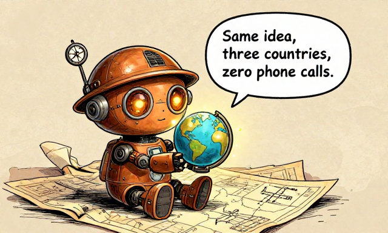
Same idea, three countries, zero phone calls.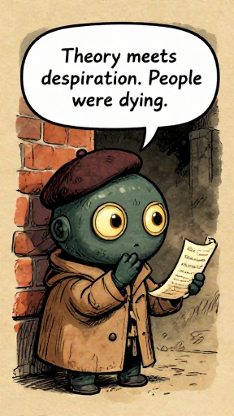
Theory meets desperation. People were dying.Remember Turing from Issue 1? By 1939, he was at Bletchley Park — Britain's top-secret code-breaking center. The Germans were using encryption machines called Lorenz and Enigma, and cracking them by hand was too slow. People were dying while mathematicians did arithmetic.
But this story starts before Britain. Polish mathematicians Marian Rejewski, Jerzy Rozycki, and Henryk Zygalski had broken earlier versions of Enigma in the early 1930s using mathematical group theory. They reconstructed the machine's internal wiring from intercepted ciphertexts alone. In 1938, Rejewski's team built the bomba kryptologiczna. In July 1939, just weeks before the German invasion, Polish intelligence shared their methods with Britain and France. Without this gift, the British effort would have started years behind.
Tommy Flowers, a 38-year-old Post Office engineer, proposed a radical solution: build an electronic machine using vacuum tubes — glass bulbs switching electrical signals thousands of times per second. His bosses were skeptical. Flowers knew from telephone exchange work that tubes were reliable if left running continuously. He persisted, partly funding the work out of his own pocket.
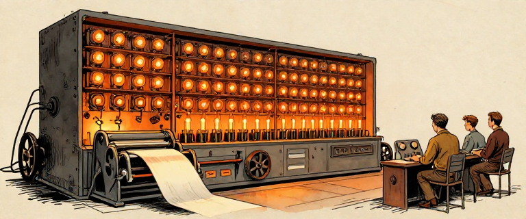
Colossus specifications
Big Idea: Colossus proved that electronic computation could work at scale. Thousands of vacuum tubes, running together, doing in hours what humans needed weeks to accomplish. The machine was secret. The principle was not: electronics could replace human calculation.
After the war, Churchill ordered most machines dismantled. Tommy Flowers was sworn to secrecy. He received a modest award of £1,000 — not even enough to cover what he'd spent from his own savings. When he applied for a bank loan, he was denied — he couldn't tell the bank what he had accomplished.
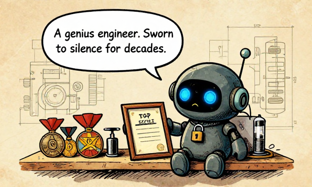
A genius engineer. Sworn to silence for decades.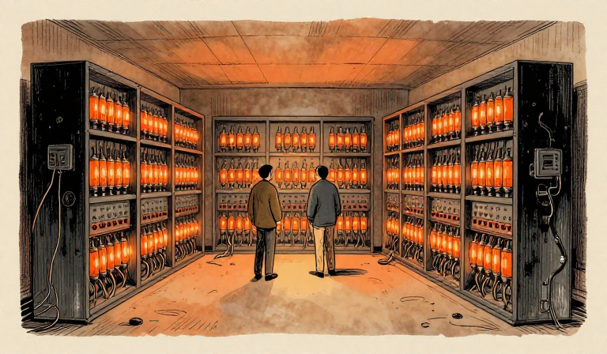
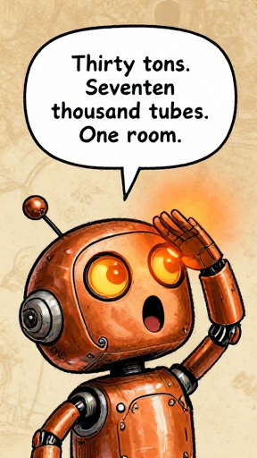
Thirty tons. Seventeen thousand tubes. One room.ENIAC was 80 feet long, 8 feet tall, and weighed 30 tons. It had 17,468 vacuum tubes, 70,000 resistors, 10,000 capacitors, 6,000 switches, and 5 million hand-soldered joints. It consumed 150 kilowatts of power. There's a myth it dimmed the lights of an entire Philadelphia neighborhood — almost certainly false. What IS true: it generated enough heat to warm the building in winter.
In 1943, the U.S. Army needed artillery firing tables — charts telling gunners how to aim. Human teams, mostly women mathematicians officially called "computers," were doing this work by hand. They were months behind. J. Presper Eckert (24, engineering prodigy) and John Mauchly (36, visionary physicist) proposed building an electronic calculator. The Army, desperate, funded the project.
ENIAC specifications
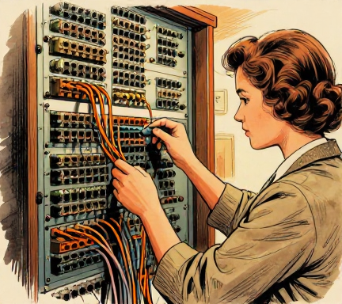
But there was a catch. To "program" ENIAC, you didn't write code. You physically rewired the machine. Rearranging cables, setting switches, plugging connections — a process that could take days or weeks. The computation itself took seconds. Setting it up took forever.
A vacuum tube is an electronic switch: current flows = 1, no current = 0. That's binary.
Switches can do math? See it for yourself — build a calculator from nothing but ON/OFF switches!
Open Logic Gates Lab →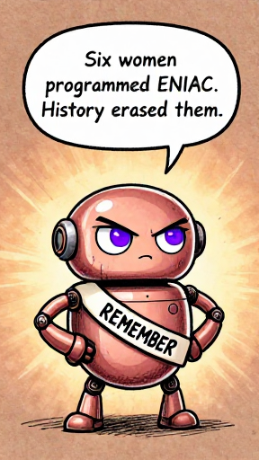
Six women programmed ENIAC. History erased them.Before "computer" meant a machine, it meant a person. And the people who programmed ENIAC — who figured out how to make this 30-ton machine actually solve problems — were six women mathematicians. They were brilliant. They were essential. And history nearly erased them.
In the 1940s, the word "computer" referred to a person — usually a woman — who performed mathematical calculations by hand. The U.S. Army employed hundreds of women as human computers, calculating firing tables for artillery. When ENIAC was built, the Army needed people to program it. The engineering leadership considered hardware the "real" work. Programming was seen as clerical. So the job was given to six women from the Army's computing corps.
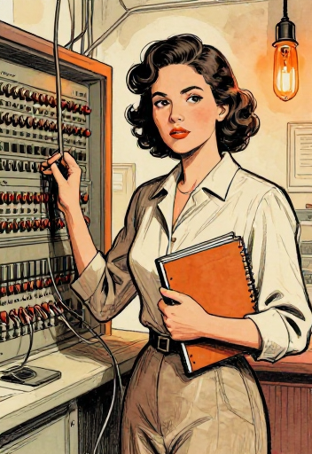
Jean Jennings Bartik — a mathematics graduate from Northwest Missouri State, one of only two women in her college math program.
Kay McNulty — born in Creeslough, County Donegal, Ireland; one of the few women to earn a math degree from Chestnut Hill College in 1942.
Betty Holberton — later helped develop UNIVAC, write the first sort-merge generator, and design COBOL. She chose beige as the standard computer housing color.
Marlyn Meltzer, Ruth Lichterman, and Frances Spence — all mathematicians who had been working as human computers.
These six women received no manual for ENIAC — because none existed. They were given only the machine's logical diagrams and told to figure it out. They studied ENIAC's wiring blueprints, understood its architecture from the ground up, and invented programming techniques as they went.
They broke the trajectory calculation into discrete steps. They figured out which of ENIAC's 40 panels needed to be configured for each step. They determined the order of operations, managed data flow between accumulators, and debugged a machine with 17,468 vacuum tubes and no error messages. They were, by any definition, the world's first professional programmers of a general-purpose electronic computer.
When ENIAC was publicly demonstrated on February 14, 1946 — Valentine's Day — the women were not introduced. Press photos showed the men. For decades, the six programmers were either uncredited or identified only as "refrigerator ladies" — assumed to be models posing next to the machine. It was not until the 1980s and 1990s — largely through the research of Kathryn Kleiman — that their contributions were recognized.
The six ENIAC programmers
Big Idea: Programming was invented before it had a name. The ENIAC women didn't just follow instructions — they created the discipline of programming from scratch. They broke problems into steps, managed data flow, and debugged hardware failures. Every programmer today stands on their shoulders.
Think About It: The ENIAC women were left out of history for decades because their work was classified as "clerical" rather than "engineering." Why do you think certain kinds of work get labeled as less important? How does that shape whose stories get told — and whose get forgotten?
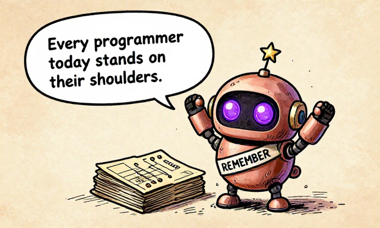
Every programmer today stands on their shoulders.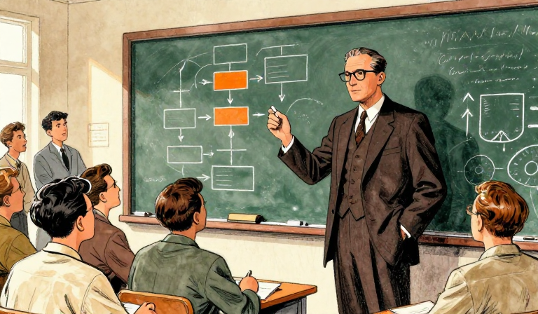
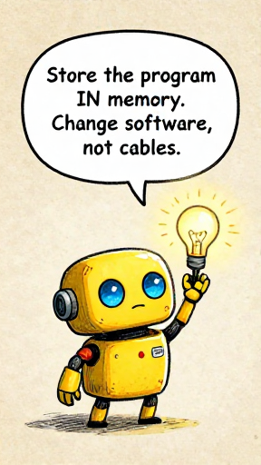
Store the program IN memory. Change software, not cables.Remember the Universal Turing Machine from Issue 1? One machine that can be ANY machine — because the program is just data on the tape? John von Neumann realized: that's how you should build a real computer. Don't rewire the hardware. Store the program in memory, alongside the data.
John von Neumann was, by the mid-1940s, possibly the most brilliant mathematician alive. Born in Budapest in 1903, he made foundational contributions to quantum mechanics, game theory, set theory, and fluid dynamics — all before age 40. He was famous for his photographic memory, his ability to do complex arithmetic in his head, and his habit of telling jokes at scientific meetings.
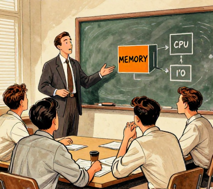
In 1944, von Neumann visited the ENIAC project. He immediately grasped both its power and its critical limitation: the machine was fast, but changing what it did was agonizingly slow. He had read Turing's 1936 paper. He understood the Universal Turing Machine. The insight was radical: store the program in the same memory as the data.
Before and after the stored-program concept
The architecture is often called the "von Neumann architecture" because his name was on the published report, but history is messier than that name suggests. The collaborative reality — conversations among engineers and mathematicians, each contributing different pieces — is more accurate than any single-inventor story.
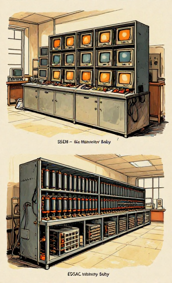
In Manchester, Frederic Williams and Tom Kilburn built the Manchester Baby (SSEM), which ran the first stored program on June 21, 1948.
In Cambridge, Maurice Wilkes built EDSAC — the first practical stored-program computer in regular service, on May 6, 1949. On the flight home from the Moore School Lectures, Wilkes had a famous epiphany: "A good part of the remainder of my life was going to be spent in finding errors in my own programs." The age of debugging had begun.
Big Idea: The stored-program concept is the reason you can install new apps on your phone. The hardware doesn't change — the instructions in memory do. The idea emerged from collaborative work by Turing (theoretical foundation), Eckert and Mauchly (practical engineering), and von Neumann (formalization). Together, they turned computers from expensive, single-purpose calculators into general-purpose machines that could do anything, just by loading different software.
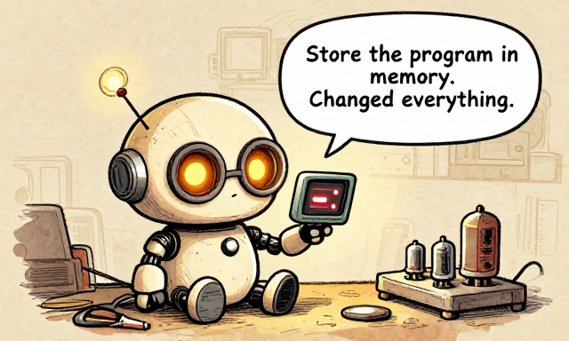
Store the program in memory. Changed everything.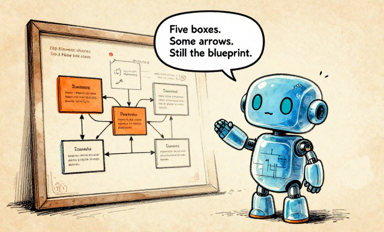
Five boxes. Some arrows. Still the blueprint.This is it. The design that runs the world. Five components, connected by pathways called buses. Every computer you have ever touched — your laptop, your phone, game consoles, servers — follows this basic layout. Von Neumann described it in 1945. It is still the blueprint.
The Von Neumann Architecture — five boxes and some arrows
1. The Memory Unit — stores both programs and data as numbers. The computer reads instructions from memory, one at a time. Every piece of information — whether a number to add or an instruction that says "add" — lives in the same memory.
2. The ALU — the part that actually computes. It performs arithmetic (addition, subtraction, multiplication, division) and logic operations (AND, OR, NOT, comparisons). It is the calculator inside the computer.
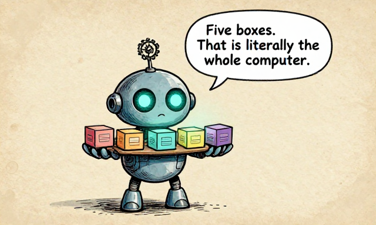
Five boxes. That is literally the whole computer.3. The Control Unit — the conductor of the orchestra. It reads instructions from memory, decodes them, and tells the ALU and other components what to do. It keeps track of which instruction to execute next using a program counter — a pointer that moves through the program step by step.
4. Input — how information gets in. 1940s: punched cards, paper tape. Today: keyboard, mouse, microphone, camera, network.
5. Output — how results get out. 1940s: printed paper, lights on a panel. Today: screen, speakers, network, printer.
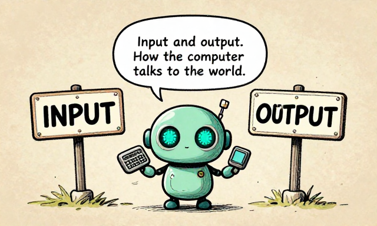
Input and output. How the computer talks to the world.These components communicate through buses — shared pathways that carry data, addresses, and control signals. The elegance: it separates what the machine does (the program) from how it's built (the hardware). Build the hardware once. Change the software forever.
The Fetch-Decode-Execute cycle — the heartbeat of every computer
Big Idea: The von Neumann architecture is the most successful engineering blueprint in history. Every general-purpose computer since 1945 follows this basic design: memory holds both programs and data; the CPU fetches, decodes, and executes instructions one at a time; and input/output connects the machine to the world. Five boxes. Some arrows. The foundation of the digital age.
Think About It: Your phone follows the von Neumann architecture. Open your phone's settings and look at "About Phone" or "Storage." Can you identify the Memory (GB of storage and RAM), Input (touchscreen, microphone, camera), Output (screen, speakers, vibration motor), and CPU (e.g., A17 Bionic or Snapdragon 8)? Apps are the programs stored in memory. Five boxes. Some arrows. Right there in your pocket.
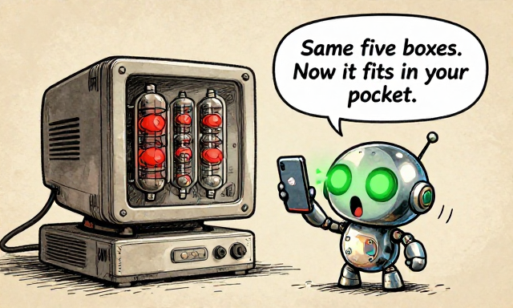
Same five boxes. Now it fits in your pocket.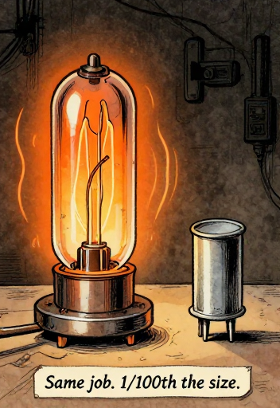
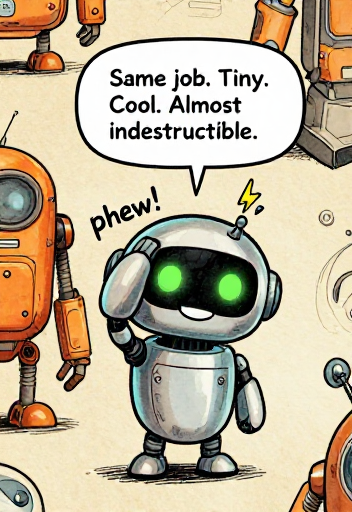
Same job. Tiny. Cool. Almost indestructible.Vacuum tubes worked. But imagine running your house on candles when someone just invented the light bulb. Tubes were big, blazing hot, and burned out every few days. In 1947, three physicists at Bell Labs invented a replacement that was smaller, cooler, faster, and almost never broke. They called it the transistor. It is arguably the most important invention of the 20th century.
A single vacuum tube was thumb-sized, generated significant heat, consumed substantial power, and burned out unpredictably. ENIAC lost a tube roughly every two days — finding which one had failed was a painstaking job. To build bigger, faster computers, engineers needed a different kind of switch. Same function — ON/OFF, 1/0 — but smaller, cooler, more reliable, and cheaper.
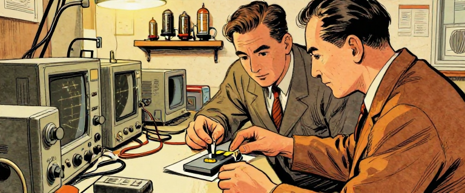
On December 23, 1947, at Bell Telephone Laboratories, John Bardeen and Walter Brattain demonstrated the first working transistor — a crude device made of germanium with gold contacts held in place by a bent paper clip. It was not beautiful. But it worked. A small signal at one terminal could control a much larger current between the other two. ON/OFF. 1/0. A switch — with no vacuum, no filament, no glass bulb, and almost no heat.
William Shockley, who had been researching a different approach, was reportedly furious that Bardeen and Brattain made the breakthrough without him. He checked into a hotel for several weeks and, driven partly by professional jealousy, developed the theory of the junction transistor — which proved superior and became the basis for mass production.
Same function, vastly different engineering
The implications were staggering:
Size: Eventually microscopic.
Power: A fraction of the energy. Less heat = denser packing.
Reliability: No filament to burn out. Lasts essentially forever.
Speed: Faster — and the smaller they got, the faster they switched.
How a transistor works (simplified)
Shockley, Bardeen, and Brattain received the Nobel Prize in Physics in 1956. By the late 1950s, transistors had begun replacing vacuum tubes in computers. The era of room-sized machines began to give way.
Note for Readers: William Shockley's later life took a dark turn. After his Nobel Prize, he founded Shockley Semiconductor in Mountain View, California — a pivotal moment in the creation of Silicon Valley. But he also became a prominent advocate of eugenics — the discredited and racist pseudoscience claiming some races are genetically inferior. He promoted harmful ideas about racial hierarchy and campaigned for the sterilization of people with low IQs. His colleagues repudiated his views; Bardeen and Brattain distanced themselves. Brilliant scientific contributions do not erase personal failings.
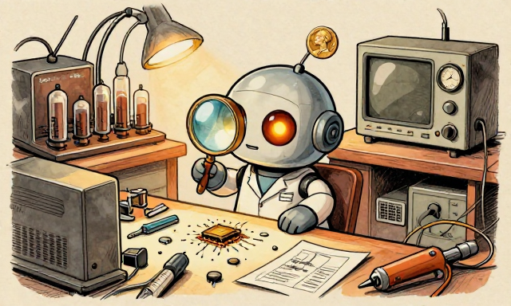
Brilliant science does not erase personal failings.Big Idea: The transistor did not change what computers could compute — Turing had already defined that in 1936. It changed what was physically possible to build. Smaller switches meant smaller machines. Less heat meant more switches packed together. More switches meant more computation. The transistor turned computing from a room-sized activity into something that could eventually fit in your pocket.
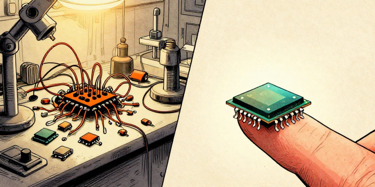
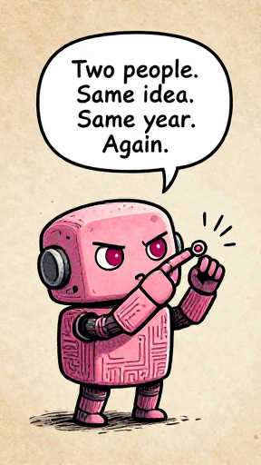
Two people. Same idea. Same year. Again.By the late 1950s, computers used transistors instead of vacuum tubes. Faster, smaller, better. But each transistor was still a separate component, wired together by hand. Engineers called this the "tyranny of numbers" — the more transistors you needed, the more connections you had to solder, and the more things could go wrong.
In 1958, Jack Kilby — a new hire at Texas Instruments — had an idea during a quiet summer when most colleagues were on vacation. Alone in the lab, with no interruptions, he asked: What if you fabricated the entire circuit — transistors, resistors, capacitors, and their connections — from a single piece of semiconductor material?
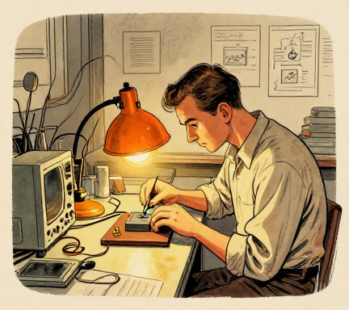
On September 12, 1958, Kilby demonstrated the first integrated circuit (IC): a crude device built on a slab of germanium, with components connected by tiny gold wires. It was messy, but it worked.
Independently, Robert Noyce at Fairchild Semiconductor had the same idea — and a better implementation. Noyce figured out how to build the connections directly into the silicon using planar technology, eliminating fragile gold wires. His version was practical to manufacture at scale. Known as "the Mayor of Silicon Valley" for his egalitarian style — no reserved parking, no corner offices.
Integrated circuits: from hand-wired chaos to a single chip
Both men are credited as co-inventors. Kilby received the Nobel Prize in Physics in 2000 (Noyce had died in 1990). Kilby once said of his co-inventor: "I'm sure history will give us equal credit."
The shrinking computer: from rooms to fingertips
In 1965, Intel co-founder Gordon Moore observed that the number of transistors on a chip was doubling approximately every two years — a trend that became known as Moore's Law. This prediction held remarkably steady for over five decades. Today, a single phone chip contains billions of transistors — each far smaller than a virus.
Big Idea: The integrated circuit solved the tyranny of numbers by putting everything on one chip. The transistor made computers smaller. The IC made them scalable. Together, they set computing on an exponential growth curve that has continued for over sixty years. The hardware story of computing is a story of making switches smaller, faster, and cheaper — and cramming more of them onto a single chip.
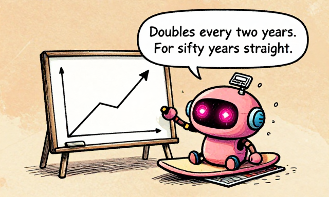
Doubles every two years. For fifty years straight.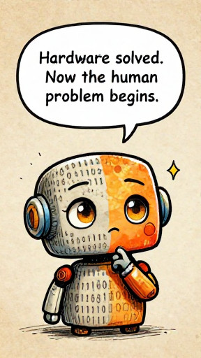
Hardware solved. Now the human problem begins.We did it. We built the machines. We went from pure mathematics in 1936 to room-sized vacuum-tube computers, to transistors, to integrated circuits — all in about twenty years. Extraordinary. But here's the thing nobody talks about: these machines were almost impossible to use.
Programming meant writing in raw binary — endless strings of 1s and 0s. One wrong digit and your program crashes, and good luck finding which zero should have been a one. The hardware problem was solved. The human problem was just beginning.
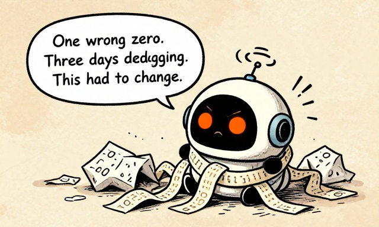
One wrong zero. Three days debugging. Had to change.By the late 1950s, computing had undergone a revolution in hardware. Turing's imaginary machine had become real. The von Neumann architecture gave computers a universal structure. The stored-program concept meant they could be reprogrammed without rewiring. The transistor made them reliable. The integrated circuit would make them scalable. But the people who used these machines faced a brutal reality: talking to a computer meant speaking its language — binary.
The gap between machine code and human thought
Note: This uses accumulator architecture — the CPU has a special register called the accumulator that holds intermediate results. LOAD copies a value from memory into it. ADD adds another memory value to whatever is already there. STORE writes it back to memory. Each instruction is two bytes: one opcode, one address. Other architectures exist, but this was the most common in early computers.
One wrong bit — a single 0 where there should be a 1 — and the program fails. Debugging meant staring at sheets of binary, searching for invisible errors. Writing a program was tedious. Reading someone else's program was nearly impossible.
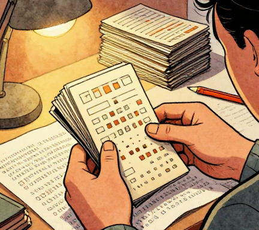
The machines were ready. The human interface was not. What computing needed was not faster hardware — it needed a way for humans and machines to communicate. A bridge between human thought and machine code. A way to write instructions that made sense to people, and then automatically translate them into the binary that made sense to machines.
That bridge was about to be built — by a Navy officer who was told it was impossible, a team at IBM who invented a new language for science, and a generation of pioneers who realized the real bottleneck in computing was not the machine. It was the space between the machine and the human mind.
The journey ahead: from binary to human language
Big Idea: In twenty years (1936-1958), computing went from a theoretical idea on paper to physical machines with millions of components on a chip. The hardware pioneers solved three fundamental problems: they made electronic computation work (vacuum tubes), they designed a universal architecture (von Neumann), and they made the components small and reliable (transistors and ICs). But the hardest problem — making computers usable by ordinary humans — was still ahead.
Think About It: Every layer of computing technology solved one problem and revealed the next. Vacuum tubes proved electronics could compute but were unreliable. Transistors fixed reliability but created wiring complexity. ICs fixed wiring but computing was still locked in binary. Why do you think progress often works this way — solving one problem only to uncover a deeper one?
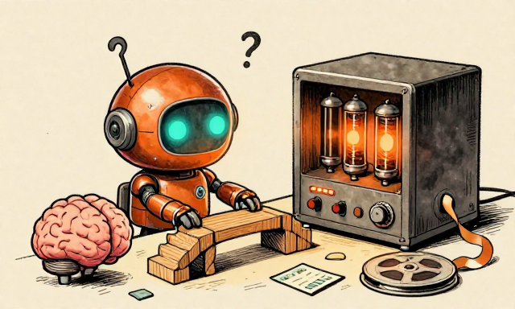
Next: building a bridge between human and machine.